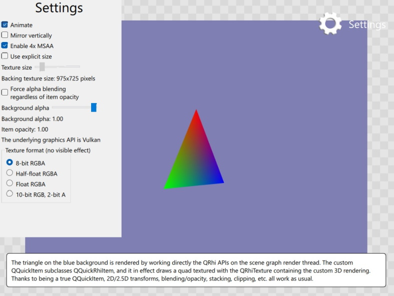

Scene Graph - RHI Texture Item
Shows how to implement a custom QQuickItem that displays a QRhi-rendered texture.

This example shows how to implement an item that performs cross-platform, portable 3D rendering into a texture using the QRhi APIs and then displays that image.
Note: This example demonstrates advanced, low-level functionality performing portable, cross-platform 3D rendering, while relying on APIs with limited compatibility guarantee from the Qt Gui module. To be able to use the QRhi APIs, the application links to Qt::GuiPrivate and includes <rhi/qrhi.h>.
Comparison with other approaches
The RHI Under QML example shows how to implement portable, cross-platform 3D rendering with the QRhi APIs in a manner where the custom rendering is issued before the Qt Quick scene graph's own rendering, effectively providing an "underlay". That approach is efficient since now additional render targets and render passes are needed, the custom rendering is injected in the main render pass before the scene graph's own draw calls.
In contrast, this example involves a separate render target, a QRhiTexture, the dimensions of which match the QQuickItem's size in the scene, and a whole render pass that is used to clear and then draw into that texture. The texture is then sampled in the main render pass and is used to texture a quad, effectively displaying a 2D image.
Compared to the underlay/overlay approach, this allows displaying, blending, and transforming the flattened 2D image of the 3D rendering anywhere in the Qt Quick scene since here we have a true QQuickItem. This comes at the expense of being more expensive in terms of resources and performance since it involves rendering to a texture first.
Overview
The example is implemented using QQuickRhiItem and QQuickRhiItemRenderer. QQuickRhiItem is a convenience class that can be subclassed to easily and quickly get a fully featured, custom QQuickItem that displays the contents of a QRhiTexture by using QSGSimpleTextureNode under the hood. The contents of the texture is generated by the application-provided logic implemented in its QQuickRhiItemRenderer subclass.
ExampleRhiItem is a QQuickRhiItem subclass that offers a few properties, such as angle and backgroundAlpha. These are going to be read, written, and animated from QML. In order to support Qt Quick's threaded rendering model, the QQQuickRhiItemRenderer has a virtual synchronize() function that can be reimplemented to safely perform copying of data between the QQuickRhiItem (belonging to the main/GUI thread) and the QQuickRhiItemRenderer (belonging to the render thread, if there is one).
QQuickRhiItemRenderer *ExampleRhiItem::createRenderer() { return new ExampleRhiItemRenderer; } void ExampleRhiItem::setAngle(float a) { if (m_angle == a) return; m_angle = a; emit angleChanged(); update(); } void ExampleRhiItem::setBackgroundAlpha(float a) { if (m_alpha == a) return; m_alpha = a; emit backgroundAlphaChanged(); update(); } void ExampleRhiItemRenderer::synchronize(QQuickRhiItem *rhiItem) { ExampleRhiItem *item = static_cast<ExampleRhiItem *>(rhiItem); if (item->angle() != m_angle) m_angle = item->angle(); if (item->backgroundAlpha() != m_alpha) m_alpha = item->backgroundAlpha(); }
initialize() is called at least once before the first call to render(), but may in practice be invoked multiple times: if the QQuickItem geometry changes (due to some layout change, resizing the window, etc.), if QQuickRhiItem setting such as the sample count and texture format change, or if the item is reparented so that is belong to a new QQuickWindow, these all trigger calling initialize() again because they imply that one or more of the resources QQuickRhiItem-managed resources change, which is going to have implications on the subclass as well. The example code here is prepared to handle these special situations (changing QRhi, changing sample count, changing texture format). (as it does not hold on to the texture used as the color buffer, the case when the texture is recreated due to a different size needs no special handling)
void ExampleRhiItemRenderer::initialize(QRhiCommandBuffer *cb) { if (m_rhi != rhi()) { m_rhi = rhi(); m_pipeline.reset(); } if (m_sampleCount != renderTarget()->sampleCount()) { m_sampleCount = renderTarget()->sampleCount(); m_pipeline.reset(); } QRhiTexture *finalTex = m_sampleCount > 1 ? resolveTexture() : colorTexture(); if (m_textureFormat != finalTex->format()) { m_textureFormat = finalTex->format(); m_pipeline.reset(); }
The rest if initialize() is straightforward QRhi-based code.
The 3D scene uses a perspective projection, which is calculated based on the output size, queried from the QRhiRenderTarget for convenience (because this works regardless of using multisampling or not, whereas accessing colorTexture() and msaaColorBuffer() would need branching logic based on which of the objects happens to be valid)
Note the usage of QRhi::clipSpaceCorrMatrix() to cater for the coordinate system differences between 3D graphics APIs.
if (!m_pipeline) {
m_vbuf.reset(m_rhi->newBuffer(QRhiBuffer::Immutable, QRhiBuffer::VertexBuffer, sizeof(vertexData)));
m_vbuf->create();
m_ubuf.reset(m_rhi->newBuffer(QRhiBuffer::Dynamic, QRhiBuffer::UniformBuffer, 64));
m_ubuf->create();
m_srb.reset(m_rhi->newShaderResourceBindings());
m_srb->setBindings({
QRhiShaderResourceBinding::uniformBuffer(0, QRhiShaderResourceBinding::VertexStage, m_ubuf.get()),
});
m_srb->create();
m_pipeline.reset(m_rhi->newGraphicsPipeline());
m_pipeline->setShaderStages({
{ QRhiShaderStage::Vertex, getShader(QLatin1String(":/scenegraph/rhitextureitem/shaders/color.vert.qsb")) },
{ QRhiShaderStage::Fragment, getShader(QLatin1String(":/scenegraph/rhitextureitem/shaders/color.frag.qsb")) }
});
QRhiVertexInputLayout inputLayout;
inputLayout.setBindings({
{ 5 * sizeof(float) }
});
inputLayout.setAttributes({
{ 0, 0, QRhiVertexInputAttribute::Float2, 0 },
{ 0, 1, QRhiVertexInputAttribute::Float3, 2 * sizeof(float) }
});
m_pipeline->setSampleCount(m_sampleCount);
m_pipeline->setVertexInputLayout(inputLayout);
m_pipeline->setShaderResourceBindings(m_srb.get());
m_pipeline->setRenderPassDescriptor(renderTarget()->renderPassDescriptor());
m_pipeline->create();
QRhiResourceUpdateBatch *resourceUpdates = m_rhi->nextResourceUpdateBatch();
resourceUpdates->uploadStaticBuffer(m_vbuf.get(), vertexData);
cb->resourceUpdate(resourceUpdates);
}
const QSize outputSize = renderTarget()->pixelSize();
m_viewProjection = m_rhi->clipSpaceCorrMatrix();
m_viewProjection.perspective(45.0f, outputSize.width() / (float) outputSize.height(), 0.01f, 1000.0f);
m_viewProjection.translate(0, 0, -4);
The implementation of render() records the drawing of a single triangle. The uniform buffer with the 4x4 matrix is updated every time since we expect the rotation angle to change. The clear color has the item-provided background alpha baked in. Remember the need to premultiply the alpha value in the red, green, and blue components as well.
void ExampleRhiItemRenderer::render(QRhiCommandBuffer *cb) { QRhiResourceUpdateBatch *resourceUpdates = m_rhi->nextResourceUpdateBatch(); QMatrix4x4 modelViewProjection = m_viewProjection; modelViewProjection.rotate(m_angle, 0, 1, 0); resourceUpdates->updateDynamicBuffer(m_ubuf.get(), 0, 64, modelViewProjection.constData()); // Qt Quick expects premultiplied alpha const QColor clearColor = QColor::fromRgbF(0.5f * m_alpha, 0.5f * m_alpha, 0.7f * m_alpha, m_alpha); cb->beginPass(renderTarget(), clearColor, { 1.0f, 0 }, resourceUpdates); cb->setGraphicsPipeline(m_pipeline.get()); const QSize outputSize = renderTarget()->pixelSize(); cb->setViewport(QRhiViewport(0, 0, outputSize.width(), outputSize.height())); cb->setShaderResources(); const QRhiCommandBuffer::VertexInput vbufBinding(m_vbuf.get(), 0); cb->setVertexInput(0, 1, &vbufBinding); cb->draw(3); cb->endPass(); }
See also QQuickRhiItem, Scene Graph - RHI Under QML, and Scene Graph - Custom QSGRenderNode.